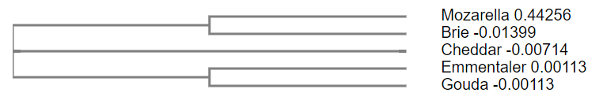

Newick parsing


Summary: This example shows how to parse obo formatted files with BioFSharp
Newick format
The newick format is a simple, strictly symbolised format representing phylogenetic trees. It is the standard tree format used by the Clustal tool.
In general, internal nodes (nodes with a least one descendant) are opened with ( and closed with ). The childnodes within those internals are separated by ,. After every node, there can be, but most not be information about its name and the distance from its parent. Name and distance are separated by :. Every full tree has a ; at its end.
These key characters are not allowed to be used within the given names or distances. This restriction allows a wide range of possible trees as can be seen by the following list of example trees:
( taken from wikipedia )
-
(,,(,));
no nodes are named
-
(A,B,(C,D));
leaf nodes are named
-
(A,B,(C,D)E)F;
all nodes are named
-
(:0.1,:0.2,(:0.3,:0.4):0.5);
all but root node have a distance to parent
-
(:0.1,:0.2,(:0.3,:0.4):0.5):0.0;
all have a distance to parent
-
(A:0.1,B:0.2,(C:0.3,D:0.4):0.5);
distances and leaf names (popular)
-
(A:0.1,B:0.2,(C:0.3,D:0.4)E:0.5)F;
distances and all names
-
((B:0.2,(C:0.3,D:0.4)E:0.5)F:0.1)A;
a tree rooted on a leaf node (rare)
The parser integrated in BioFSharp tries to cover this wide range of possible input data by using a very generic tree representantion and allowing the user to parse it the way he wants by the usage of a mapping function as additional input. Of course having an idea about this tree implementation is necessary for working with the already parsed trees. It is therefore recommended to look into the PhylTree(API reference can be found here).
Reading Newick files
To read a newick file, the function ofFile in BioFSharp.IO.Newick has to be used. It takes a mapping function of type string -> 'Distance and a path of type string. This means that names are always parsed as string but distances can be parsed at will. The usage of this is demonstrated here:
Let's say we want to parse the following tree (which is btw. output generated by clustal omega):
|
After wrapping ones head about this symbol salad, one might find a few things about this tree:
* Only the leaf nodes are named
* Every node but the top node has a distance in form of a float number
* All subtrees are binary
Here is the same tree in the form of a cladogramm:

Parsing newick files
Now comes the parsing, as already mentioned, to bring the distance into a better form, we have to define a mapping function. In this case it's easy: we basically only need a function that transforms a string to a float if possible. Here it's important to mention that the parser interprets all nodes in the same way, as a functional programmer might expect. As not all nodes in the above tree have distances, that case has to be covered too, which is done in two different ways in this example:
open BioFSharp.IO
let fileDir = __SOURCE_DIRECTORY__ + "/data/"
//Maps string to float if possible. In the case it's not it just returns 0 instead
let floatMapping (distance: string) =
try (float distance) with | _ -> 0.
//Maps string to optional float wether it can be converted or not.
let floatMappingOptional (distance: string) =
match System.Double.TryParse distance with
| true, v -> Some v
| false, _ -> None
//As path we set an examplefile included in biofsharp which consists of the tree shown above
let path = fileDir + "treeExample.txt"
Newick.ofFile floatMapping path
As written above, having an idea about the PhylTree in BioFSharp makes understanding this result much easier. Its API reference can be found here.
Writing Newick files
To write a Newick file, the function toFile is used. Besides the output path and the tree it takes two additional functions. nodeConverter is intended to be used as a kind of separator of node name and distance, as sometimes the node info is not stored as a simple tuple, but has to be parsed as such. Both have to be converted to strings for parsing reasons.
Let's see this in action. As an example we want to rebuild the original treeFile we read out above. Keep one thing in mind though: Of course we want to have it exactly look like the original. If you have read the tree with the converter function which returns a zero if the distance is not mappable to float, then the conversion back to string has to cover this case, or this zero will end up being in the file. This is not really a safe approach though, as real zeros might be lost with it. Therefore we will read and write the distance as an option and use the floatConverterOptional defined above:
//Tree with distancevalue wrapped as option
let myOptionalTree = Newick.ofFile floatMappingOptional path
//convertes nodeinformation to writeable name and distance
let converter (n,d) =
n,
match d with
| Some fl -> string fl
| None -> ""
//write our original tree to path
Newick.toFile converter (fileDir + "outputTree.txt") myOptionalTree
val string: value: 'T -> string
--------------------
type string = System.String
val float: value: 'T -> float (requires member op_Explicit)
--------------------
type float = System.Double
--------------------
type float<'Measure> = float
<summary>Represents a double-precision floating-point number.</summary>
System.Double.TryParse(s: System.ReadOnlySpan<char>, result: byref<float>) : bool
System.Double.TryParse(utf8Text: System.ReadOnlySpan<byte>, result: byref<float>) : bool
System.Double.TryParse(s: string, provider: System.IFormatProvider, result: byref<float>) : bool
System.Double.TryParse(s: System.ReadOnlySpan<char>, provider: System.IFormatProvider, result: byref<float>) : bool
System.Double.TryParse(utf8Text: System.ReadOnlySpan<byte>, provider: System.IFormatProvider, result: byref<float>) : bool
System.Double.TryParse(s: string, style: System.Globalization.NumberStyles, provider: System.IFormatProvider, result: byref<float>) : bool
System.Double.TryParse(s: System.ReadOnlySpan<char>, style: System.Globalization.NumberStyles, provider: System.IFormatProvider, result: byref<float>) : bool
System.Double.TryParse(utf8Text: System.ReadOnlySpan<byte>, style: System.Globalization.NumberStyles, provider: System.IFormatProvider, result: byref<float>) : bool
<summary> Contains functions for parsing phylogenetic trees in the Newick format </summary>
<summary> Returns a PhylTree of file. Converter is used to create a distancevalue of a string </summary>
<summary> Creates a NewickTree file of PhylTree. nodeConverter is used to split the distanceInfo and the name of a node, because they are parsed separately. First result of the tuple is name, second is distance. </summary>